Carbon Nanotube and Graphene Field-Effect Transistors
Introduction
Out of a wide range of transducer options available for the creation of compact, portable and highly-integrated biosensors, field-effect transistors are among the most promising. Field-effect transistors (FETs), initially proposed in the 1930s, consist of two conductive electrodes on either side of a semiconducting channel, the ‘source’ and ‘drain’ electrodes, alongside an isolated ‘gate’ electrode which is typically perpendicular to the channel. An applied electric field from the gate electrode capacitively controls channel resistance, giving rise to the label ‘field-effect’. By adjusting gate voltage, the flow of charge carriers between source and drain can be varied over several orders of magnitude. The ability of this simple structure to obtain a large signal response from small changes in channel behaviour means field-effect transistors can be used as high-quality amplifiers for sensor applications [@Kauffman2008; @Petti2016; @Tran2016; @Shkodra2021; @Yao2021].
Carbon nanotube network and graphene field-effect transistors (CNT FETs and GFETs) are both examples of a class of field-effect transistors called thin-film transistors (TFTs). Thin-film transistors were first developed in 1962 [@Weimer1962], and are closely related to the commonly-used metal oxide semiconductor field-effect transistor (MOSFET). Unlike MOSFETs, thin-film transistors do not use the substrate as the device channel. Instead, current passes through a semiconducting film on the surface of the device; the films discussed here are graphene and carbon nanotubes, two carbon-based low-dimension nanomaterials. Since thin-film transistors do not require a conductive substrate, they can be fabricated using light, flexible and stretchable substrates, making them significantly more versatile than MOSFETs [@Kauffman2008; @Cao2009; @Petti2016; @Shkodra2021]. Invisible conductive thin-films such as metal oxides and carbon nanotube networks can also be used to create transparent electronics [@Cao2009]. While the principle of modulating current with a gate electrode is shared by the MOSFET and TFT, the underlying physics behind the transistor behaviour differs between the two. The MOSFET is turned on by the change in carrier behaviour when switching from a depletion to an inversion mode, while this is not the case for a TFT [@Petti2016]. Details of graphene and carbon nanotube TFT switching behaviours can be found in the subsequent sections.
Thin-Film Field-Effect Transistors
Structure and Gating
.png)
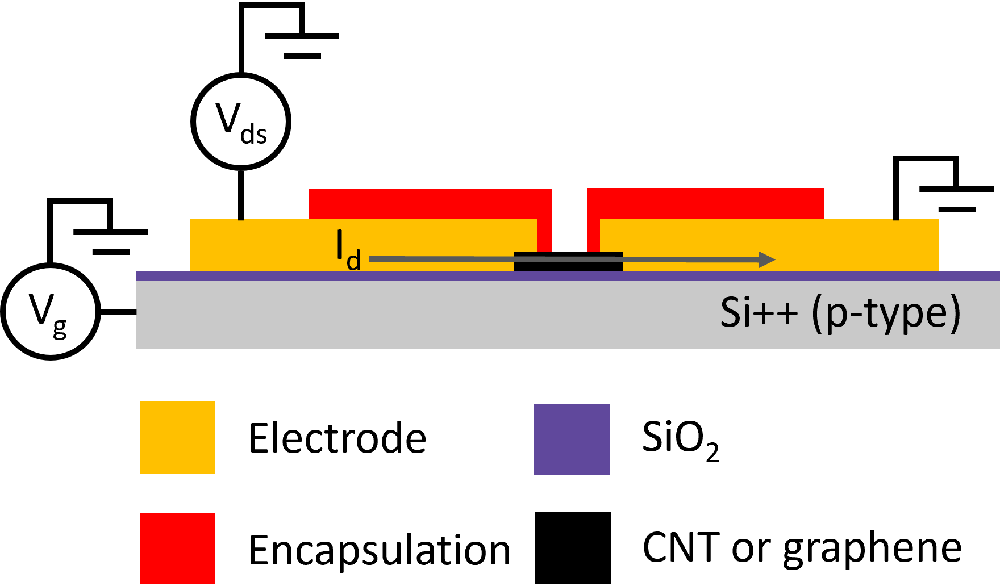
.png)
Two basic configurations of the thin-film transistor are the back-gated field-effect transistor and the liquid-gated (or electrolyte-gated) transistor. The relatively simple back-gated configuration, shown in Figure 1 (a), uses the degenerately doped Si substrate as the gate. The channel is isolated from the gate with a thin SiO\(_2\) layer. A liquid-gated device, shown in Figure 1 (b), is used for sensitive liquid-phase analyte detection. A submerged Ag/AgCl reference electrode is generally used as a top-gate in this configuration. The channel is isolated from the gate by the bulk of an electrolyte solution, which can be restricted to the channel area using a hydrophobic polydimethylsiloxane microchamber or ‘PDMS well’. The electrolyte used is typically the biofriendly phosphate-buffered saline (PBS), but other aqueous salt solutions, polymers and ion-gels have also been used [@Avouris2007; @Shkodra2021; @Tran2016; @Li2023]. Transistor operation is controlled by a ‘drain’ bias \(V_{ds}\), placed between the drain and source electrodes, and a ‘gate’ bias \(V_g\), placed between the gate and source electrodes. Gate capacitance determines the influence of \(V_g\) on drain-source current \(I_d\). In general, gate capacitance is a series combination of geometric capacitance, \(C_{G}\), and the quantum capacitance of the channel nanomaterial, \(C_{Q}\) [@Avouris2007; @Cao2009; @Heller2009a; @Tran2016; @Kireev2017; @Li2023].
Liquid-Gating and Debye Length
Understanding the ionic behaviour of the gate electrolyte used in a liquid-gated device setup gives insight into the gating and sensing behaviour of the setup. When a voltage is applied at the liquid-gate, the charged ions in solution move to form two electric double layers, one at the interface between the electrolyte and gate electrode, and one at the interface between electrolyte and semiconducting channel, as shown in Figure 2. The gate capacitance is a series combination of the capacitance of each EDL in series with quantum capacitance \(C_{Q}\) [@Heller2010; @Kireev2017; @Shkodra2021]. The Gouy-Chapman-Stern model splits the EDL into two distinct regions, the first being a compact layer of ions, the Stern layer, and the second being a more diffuse layer, the Gouy-Chapman layer [@Tiwari2022]. The surface potential of the solid-electrolyte interface exponentially decreases across the diffuse region of the double-layer; the characteristic length of this potential screening is known as Debye length, \(\lambda_D\). The typical electrolyte Debye length is on a nanometer scale, therefore the bulk electrolyte acts as an insulator, similar to the SiO\(_2\) dielectric in the back-gated configuration. The Stern layer capacitance is inversely proportional to the Debye length, and therefore decreased \(\lambda_D\) corresponds to increased gate capacitance [@Heller2010; @Ohno2015; @Shkodra2021; @Yao2021].
The equation for Debye length \(\lambda_D\) in an electrolyte solution is given by Equation 1.
\[ \lambda_D = \sqrt{\frac{\epsilon_0\epsilon_rk_bT}{2N_Aq^2I}} \tag{1}\]
Here, \(\epsilon_0\) is vacuum permittivity, \(\epsilon_r\) is the relative permittivity of the electrolyte, \(\k_B\) is the Boltzmann constant, \(T\) is absolute temperature in K, \(N_A\) is the Avogadro number, \(q\) is the elementary charge and \(I\) is ionic strength in mmol L\(^{-1}\). When temperature is kept constant, \(\lambda_D\) only depends on the ionic strength of the electrolyte and not on any attributes of the gate electrode or channel [@Stern2007; @Shkodra2021]. Successive dilutions of a particular electrolyte will increase the Debye length: for \(1 \times\) PBS, \(\lambda_D\) is \(\sim\) 1 nm, for \(0.1 \times\) PBS, \(\lambda_D\) is \(\sim\) 2 nm, for \(0.01 \times\) PBS \(\lambda_D\) is \(\sim\) 8 nm and so on. This means gate capacitance is directly dependent on the electrolyte used and its concentration [@Kireev2017; @Shkodra2021]. A \(1 \times\) PBS electrolyte gives a gate capacitance several orders of magnitude larger than that of a SiO\(_2\) back-gate. A larger capacitance significantly increases the effect of electrostatic gating on the channel current, often described as increased electrostatic coupling between gate and channel. A liquid-gated device with low Debye length will therefore be highly sensitive to electrostatic changes across a small voltage range [@Heller2010; @Ohno2015; @Kireev2017; @Yao2021].
However, a decreased Debye length also has disadvantages for sensing. Electrostatic potentials outside of the electrolyte-channel electrical double layer are effectively screened from the channel. Electrical double layers will also form around charged receptors within the solution. The combined screening effect means signals due to potential changes in charged biomolecules within the bulk electrolyte will have no effect on gating of the channel, and therefore no effect on \(I_d\). Interactions between the analyte and any receptor element must therefore occur within the Debye length, and so a tradeoff exists between channel sensitivity and the size of the sensitive region above the channel. Many medium or large proteins will require a relatively dilute electrolyte for analyte capture to be detected by the channel, which may not reflect the intended environment for biosensor application [@Stern2007; @Piccinini2018; @Shkodra2021]. Other approaches to increasing Debye length without reducing device sensitivity have therefore also been trialled. One approach involves attaching a layer of polyethylene glycol polymer (PEG) to the channel, limiting the approach of counterions. This increases Debye length at the electrolyte-channel interface while preserving the capacitance of the electrolyte-gate interface, keeping device sensitivity relatively high [@Gao2016; @Filipiak2018; @Kesler2020; @Albarghouthi2022].
Electrical Characterisation
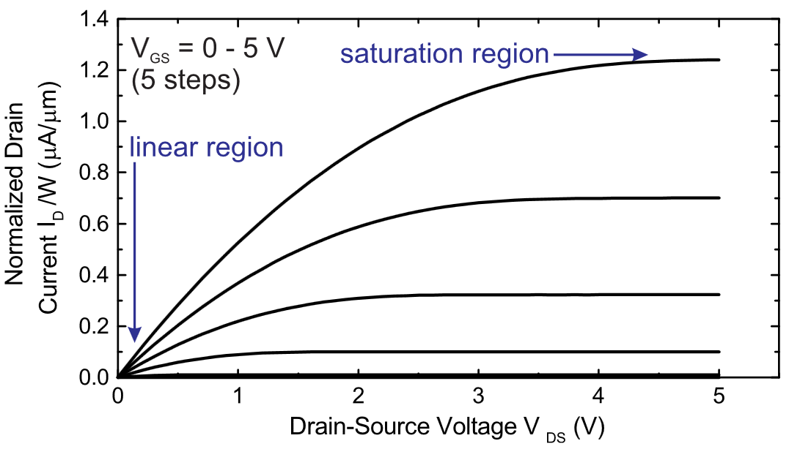
The current-voltage plots of a given transistor are known as its ‘characteristic curves’. The I-V curve of \(I_d\) against \(V_{ds}\) at constant \(V_g\) is known as the ‘source-drain’ or ‘output’ characteristic curve, while \(I_d\) against \(V_g\) at constant \(V_{ds}\) is known as the ‘transfer’ characteristic curve at that source-drain voltage [@Kauffman2008; @Petti2016; @Shkodra2021]. Applying a gate voltage \(V_g\) to the gate of an thin-film transistor influences the amount and type of available charge carriers for conduction [@Avouris2007; @Tran2016; @Heller2009a]. In an ambipolar transistor, a highly negative \(V_g\) will give rise to hole conduction, and a highly positive \(V_g\) will give rise to electron conduction [@Avouris2007; @Yao2021; @Li2023]. The minimum \(V_g\) required to turn the flow of current in a thin-film transistor ‘on’ is referred to as the threshold voltage \(V_t\) [@Petti2016; @Shkodra2021; @Li2023]. Threshold voltage is discussed in more detail in Section 1.4.3. When \(|V_{ds}| < |V_g| - |V_t|\) while \(|V_g|>|V_t|\), the device is in the linear regime. Here, \(V_{ds}\) is directly proportional to \(I_{d}\), similar to an Ohmic resistor. When \(|V_{ds}| > |V_g| - |V_t|\) and \(|V_g|>|V_t|\), the device is in the saturation regime, where the relationship between \(V_{ds}\) and \(I_{d}\) becomes non-linear [@Petti2016; @Shkodra2021; @Li2023].
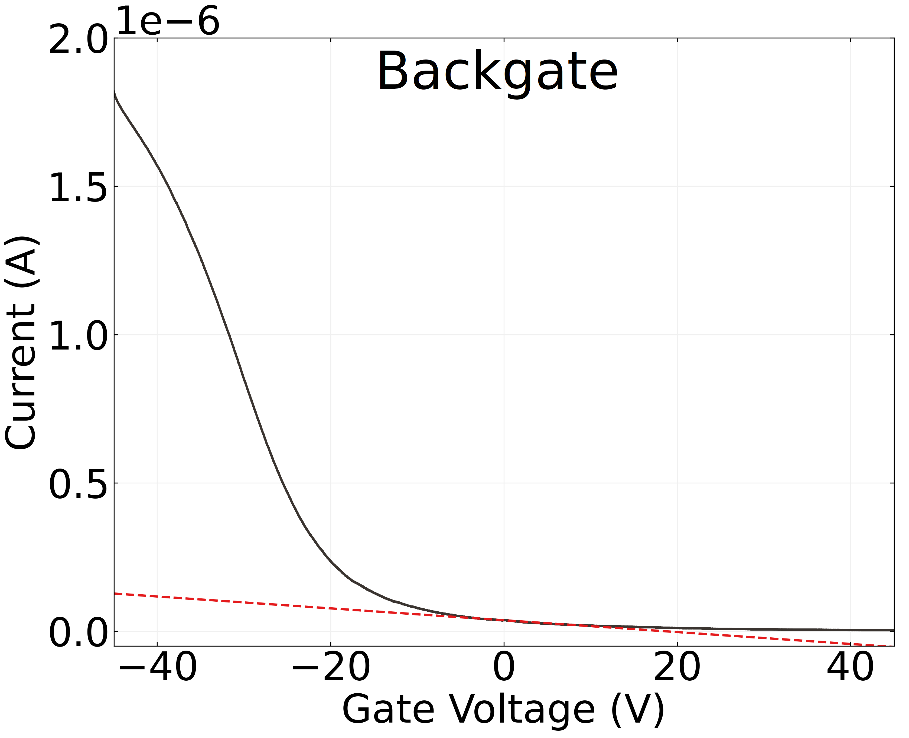
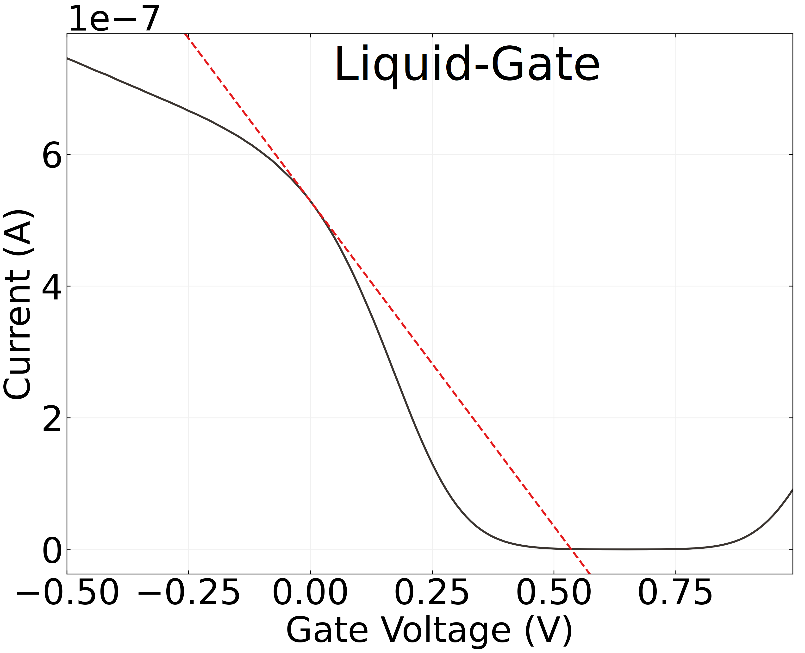
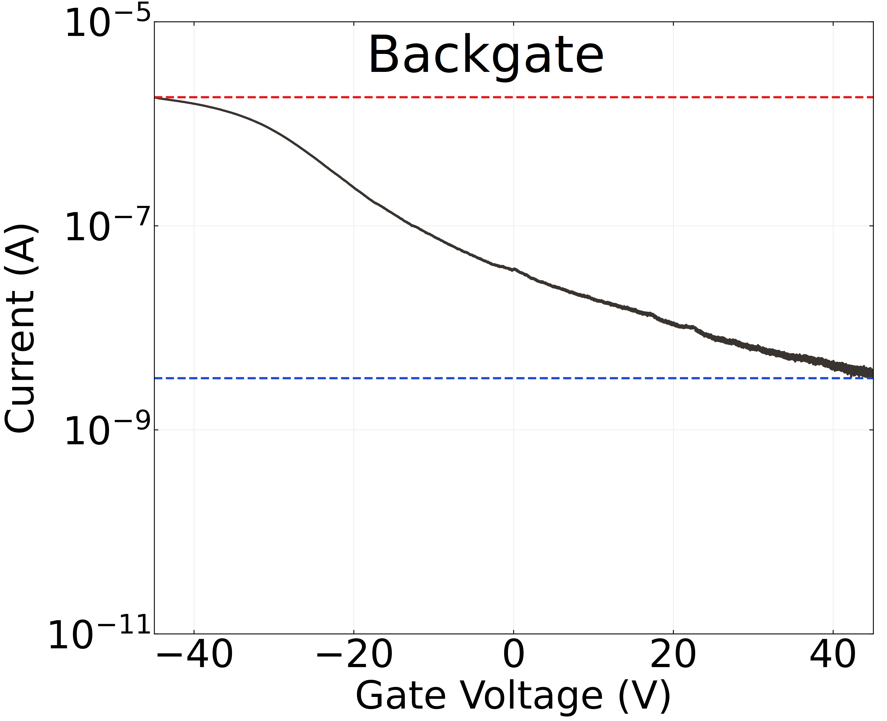
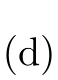
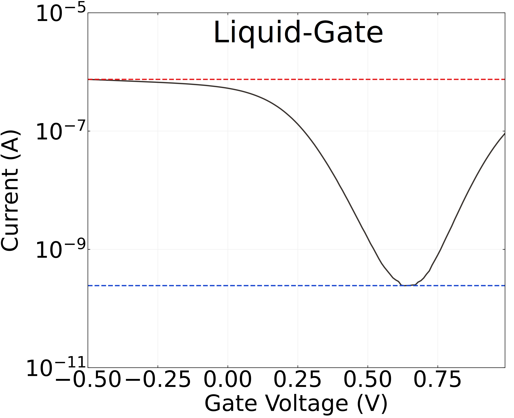
The linear and saturation regions for a metal oxide thin-film transistor are shown in Figure 3. In this thesis, constant \(V_g\) measurements from thin-film transistors were typically taken when \(V_{ds}\) was small and the TFT was in the linear operation regime. Figure 4 (a) and (c) show back-gated transfer characteristics of a thin-film transistor, and Figure 4 (b) and (d) show liquid-gated TFT transfer characteristics. The back-gated device exhibits unipolar behaviour, where the transistor conducts in only one direction along the \(I_d - V_g\) curve, while the liquid-gated device exhibits ambipolar behaviour, where conduction occurs along both directions of the curve. The liquid-gated device is also able to traverse a wide range of currents over a much more limited voltage interval than the back-gated device. A variety of quantitative parameters or figures of merit can be extracted from the transfer characteristics of a thin-film transistor [@Petti2016]. Transconductance and on-off ratio are discussed below, while threshold voltage and subthreshold swing are discussed for the carbon nanotube network case in Section 1.4.3.
One of the most important figures of merit which can be extracted from the transfer characteristic curve of a thin-film FET is the on-off current ratio, the ratio of the current through a device when the transistor is gated fully ‘on’, \(I_{on}\), to the current \(I_{off}\) when gated fully ‘off’. [@Kauffman2008;@Petti2016; @Shkodra2021]. Having a low off current is desirable as it corresponds to low power consumption by the transistor [@Rouhi2010]. In Figure 4 (a), there is a clear on regime at large negative voltages and an off regime at large positive voltages. Although the transfer curve never completely flattens in each direction, \(I_{on}\) can be reasonably estimated with the highest current obtained, while \(I_{off}\) can be estimated from the lowest current reading. In an ambipolar FET, such as that shown in Figure 4 (b), the off current can be defined as the minimum current during the transfer sweep, where the majority carrier transitions from being holes to electrons or vice versa [@Petti2016; @Zheng2017]. For the backgated channel shown in Figure 4 (a), the on-off ratio \(I_{on}/I_{off}\) is \(\sim\) 700, while for the liquid-gated device in Figure 4 (b), \(I_{on}/I_{off} \sim 3000\). The superior on-off ratio is a significant advantage of the liquid-gated configuration [@Shkodra2021].
In the linear regime, transconductance at a specific gate voltage is given by \(g_m = |dI_{d}/dV_g|\). Transconductance indicates how responsive the device is to electrostatic gating at a given gate voltage. In other words, when \(g_m\) is large, small changes in \(V_g\) can significantly modulate channel current \(I_d\), which is useful for sensing [@Heller2009a; @Ohno2015; @Kireev2017]. Transconductance at a given gate voltage is also proportional to the mobility (movement) of charge carriers in the device channel, and therefore depends on the scattering properties of the material [@Rouhi2010; @Petti2016; @Li2023]. The transconductance at a specific gate voltage can be found from performing a linear fit in a small region around that voltage on the transfer curve. Linear fits for transconductance at \(V_g = 0\) V, the operating voltage used for sensing in this thesis, are shown for a back-gated device in Figure 4 (a), and a liquid-gated device in Figure 4 (b). The corresponding transconductance values of \(g_m\) = 0.002 µS and \(g_m\) = 1 µS respectively. The difference of several orders of magnitude between back-gated and liquid-gated transconductance corresponds to the difference of several orders of magnitude between back and liquid-gated gate capacitance [@Tran2016; @Shkodra2021]. The ability to achieve high transconductance at relatively low voltage is important for the creation of low power sensors, which is another advantage of the liquid-gated setup.
Application of higher voltages to the gate in both the liquid-gate and back-gate cases can result in significant leakage currents through the gate. These currents mean that the insulating layer at the gate producing the capacitive effect no longer acts as an insulator, adversely affecting transistor behaviour and contributing to sensor drift that may be mistaken for signal responses to analyte [@Noyce2019; @Shkodra2021; @Albarghouthi2022]. In the case of back-gated devices, gate leakage occurs due to conduction through the oxide dielectric. If the gate voltage produces an electric field exceeding the dielectric strength of the oxide, dielectric breakdown can occur, where the oxide layer no longer acts as an insulator. Breakdown results from voltage-induced oxygen vacancies in the SiO\(_2\) lattice forming a conductive path through the insulator [@Padovani2017]. Irreversible breakdown occured at \(\sim\) 50 V for the back-gated channel in Figure 4. In the liquid-gated case, the electrolyte used determines the appropriate voltage range for electrical characterisation, since excessive voltages will induce redox reactions. For water-based electrolytes, gate voltages must be kept within the \(\pm\) 1 V range [@Wang2010; @Ohno2015; @Shkodra2021]. In normal operation, gate current should appear negligible on a linear scale, as shown in Figure 5.
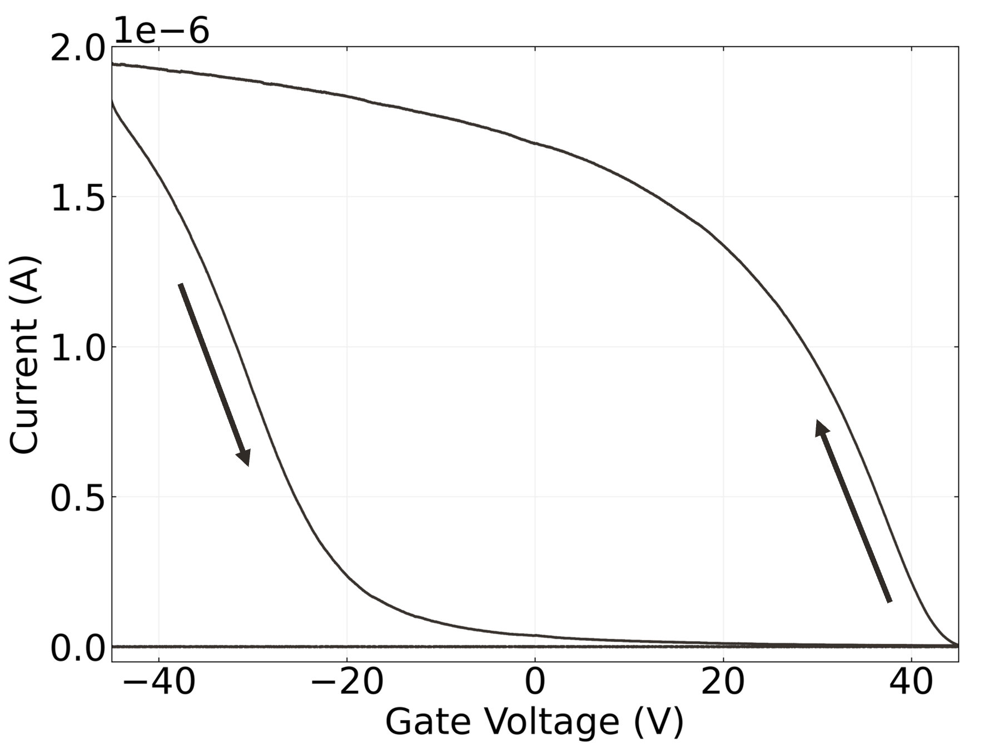
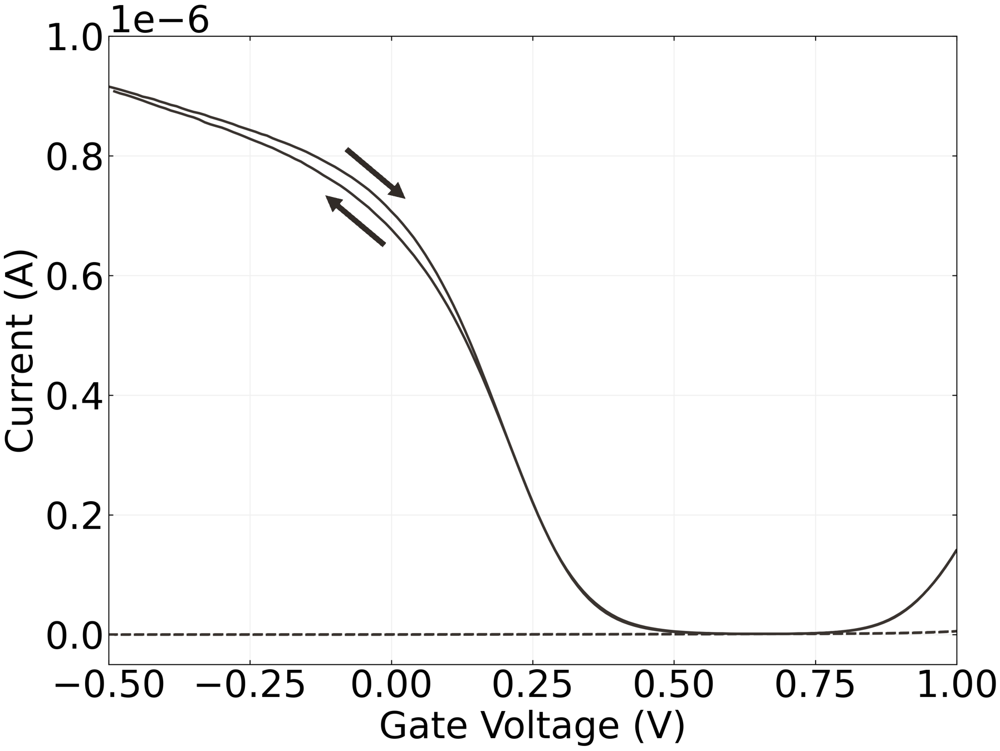
Thin-film transistor devices typically exhibit some degree of hysteresis, where the history of channel current affects future current behaviour. Hysteresis in carbon nanotube and graphene field-effect transistors is a result of filling or emptying of slow-discharge charge traps in the channel environment. These charge traps effectively dope the SiO\(_2\) insulator or the insulator-channel interface, which results from gate bias stress or dopant adsorption [@McEuen2002; @Kim2003; @Wang2010; @Bartolomeo2011; @Bargaoui2018; @Peng2018]. A capacitive gating effect from charged ions also contributes to hysteresis, from the use of a electrolyte-gated environment or from charged surface contamination [@Wang2010; @Yao2021]. Due to hysteresis, sweeping \(V_g\) forwards across a set voltage range will result in a different \(I_d - V_g\) characteristic curve than subsequently sweeping over \(V_g\) in the reverse direction. Hysteresis depends on the voltage range used for characterisation, the sweep rate and the environment of the transistor channel [@Kim2003; @Wang2010]. The effect of hysteresis on \(I_d\) when sweeping gate voltage is shown in Figure 5. The measured hysteresis is significantly lower in the liquid-gated case, possibly due to the smaller voltage range. However, this change may also result from a reduction in trap states in the SiO\(_2\) layer due to the use of a liquid-gate.
Memory effects are also present during current measurement when both source-drain and source-gate voltages are kept constant. These changes appear as a slow change in current, and are referred to here as either signal drift or baseline drift. In more extreme cases, baseline drift can obscure or even be confused with current changes attributable to analyte interaction during real-time sensing [@Noyce2019]. Signal drift occurs both in ambient conditions and in a vacuum environment, and cannot be accounted for by changes in room temperature and ambient lighting alone. While research into signal drift is ongoing, it appears to be a hysteretic effect resulting from changes in trap states over time [@Lin2006; @Bargaoui2018; @Noyce2019]. The high demand for characterisation equipment in a standard device laboratory means that waiting over three hours for baseline drift to settle is impractical, and furthermore, extended periods of voltage application may degrade bio-functionalised devices [@Noyce2019]. Since trap states are unavoidable to some extent [@DiMaria1993; @Collins2000], data analysis that accounts for baseline drift was therefore explored in some detail in this thesis.
Graphene Field-Effect Transistors
Graphene Properties
Graphene is a 2-dimensional material which consists of covalently bonded carbon atoms in a dense lattice of hexagonal cells [@McEuen2002; @Novoselov2004; @Geim2007; @Tran2016]. Graphene can be used to create a variety of low-dimensional graphitic nanomaterials, including carbon nanotubes [@McEuen2002] (see Section 1.4.1). Monolayer and bilayer graphene are zero band-gap semiconductors, where traversing the electronic bandstructure in different directions gives rise to either metallic or semiconducting behaviour [@McEuen2002; @Peng2018]. Adding more graphene layers adds more complexity to the bandstructure, with significant overlap between bands and reduced carrier mobility. When 10 or more layers are present, the structure behaves as 3-dimensional graphite [@Geim2007; @Ohno2015]. First isolated and used as a thin-film transistor channel in 2004 [@Novoselov2004], monolayer graphene has many desirable electronic properties. Charge carrier transport is ballistic over submicrometer distances at room temperature, and as graphene is metallic even at the Dirac point, this transport is not inhibited by a Schottky barrier at the metal contacts of a device [@Novoselov2004; @Geim2007; @Peng2018]. Graphene is also a highly chemically stable material. In particular, it will not readily oxidise in an electrolyte solution due to having a large ‘electrochemical window’; in other words, it is too chemically stable to take part in electrochemical reactions within a large range of applied voltages [@Ohno2015; @Tran2016].
Graphene Folds
Graphene folding (also referred to as warping or wrinkling) of up to \(\sim\) 6 nanometers in height occurs at many locations on a graphene monolayer [@Zhu2012]. These folds primarily result from the chemical vapour deposition (CVD) process onto copper used in the creation of graphene films. The thermal contraction of copper exceeds that of graphene during the rapid cooling that takes place after deposition. Since the graphene is pinned to the surface, this leads to slight folding of the monolayer [@Zhao2012; @Zhu2012; @Chhikara2013]. Transferring graphene from the rough copper to a relatively smooth Si/SiO\(_2\) wafer may also contribute to wrinkling [@Zhao2012; @Kireev2017]. These folds help to mechanically stabilise the graphene layer, but have significant negative effects on charge transport [@Geim2007; @Chhikara2013; @Zhu2012]. Folds also exhibit enhanced reactivity due to their low radius of curvature [@Zhao2012]. This is demonstrated in Figure 6, where the fluorescent Rhodamine B dye preferentially bonds to folded regions, leading to particularly dense functionalisation in these regions. This behaviour has previously been observed for the decoration of graphene with pentacene molecules [@Chhikara2013]. Other defects influencing surface reactivity include grain boundaries and point defects in the crystal structure [@Zhao2012; @Chhikara2013; @Kireev2017].
Electrical Characterisation
The transfer sweep behaviour of a graphene device is ambipolar and has no off regime under standard conditions [@Novoselov2004; @Bartolomeo2011; @Ohno2015]. When a gate voltage \(V_g\) is applied to the channel of a graphene device, the Fermi energy of the graphene is shifted and surface charge density is altered [@Novoselov2004; @Heller2010; @Ohno2015]. An increase in surface charge density means an increase in carriers available for either \(p\) or \(n\)-conduction and increased \(I_d\) [@Geim2007]. The regions of hole conduction and electron conduction are shown in Figure 7 (a), alongside the corresponding Fermi energy on the simplified graphene bandstructure (known as a ‘Dirac cone’). The transconductance of the curve at \(V_g\) = 0 V, \(g_m\) = 1 µS, is similar to the liquid-gated transconductance of a carbon nanotube device shown earlier. As graphene lacks a bandgap, there is a minimum possible conductance for graphene devices, which leads to a relatively small on-off ratio [@Novoselov2004; @Geim2007]. Folding may further decrease on-off ratio due to diffusive transport of carriers along the folds [@Zhu2012]. The on-off ratio of the graphene transfer curve shown in Figure 7 (a) is 5. A bandgap can be introduced to a graphene device using a dual-gated configuration, increasing the on-off ratio past 100 [@Xia2010].

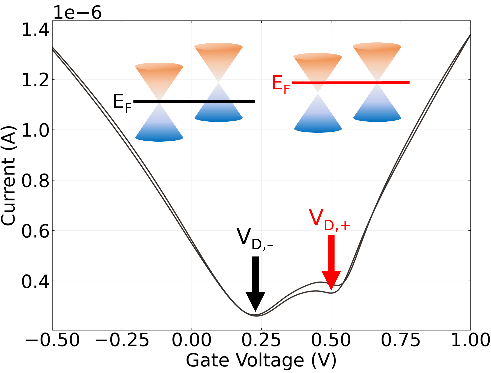
The minimum conductance obtainable by gating in a graphene device occurs at what is known as the charge neutrality or Dirac point, where the population of charge carriers is at a minimum [@Novoselov2004; @Bartolomeo2011; @Ohno2015; @Kireev2017]. At gate voltages close to the Dirac voltage, both electrons and holes are present, and at the Dirac point, there are equal concentrations of each carrier present [@Novoselov2004; @Bartolomeo2011; @Peng2018]. As shown in Figure 7 (a), as the gate voltage moves left away from the Dirac voltage and Fermi energy is shifted into the valence band, holes begin to dominate conduction, while as gate voltage is moved to the right of the Dirac voltage, where Fermi energy is shifted into the conduction band, electrons dominate [@Novoselov2004; @Bartolomeo2011; @Feng2014; @Zhang2015]. At points far from the Dirac voltage, conductivity increases linearly [@Novoselov2004; @Bartolomeo2011; @Peng2018]. Typically, a monolayer graphene channel conducts holes at zero gate voltage, which results from the presence of \(p\)-dopants such as oxygen and water adsorbed from the air and resist residues. By removing these dopants, the Dirac point feature can be brought closer to the zero gate voltage position on the transfer curve, indicating graphene is naturally a mixed-carrier conductor [@Novoselov2004; @Bartolomeo2011; @Zhang2015; @Kireev2017; @Peng2018].
Some graphene devices naturally exhibit a double-minimum feature in the transfer characteristic curve, corresponding to two separate Dirac points [@Bartolomeo2011; @Feng2014; @Zhang2015; @Kireev2017; @Peng2018]. This effect is due to doping of graphene by charge transfer from the metal contacts. In shorter length channels, metal doping affects the entire channel length. Band bending from channel doping near the metal contact results in a consistent Fermi level across the channel, meaning only a single Dirac point is present in the transfer characteristic curve. However, for longer channels, metal doping no longer occurs across the entire channel length [@Bartolomeo2011; @Peng2018]. This discrepancy leads to a difference in Fermi level between the metal-doped graphene and graphene in the unaffected channel region [@Bartolomeo2011; @Feng2014; @Peng2018; @Zhang2015]. The difference in Fermi levels results in the introduction of a second Dirac point. The relative level of doping in the metal-doped and unaffected channel regions determines the relative \(V_g\) position of each local minimum on the \(I_d - V_g\) curve [@Bartolomeo2011; @Peng2018; @Zhang2015].
Figure 7 (b) shows a double-minimum transfer characteristic with each Dirac point indicated. At large negative \(V_g\), the Fermi energy level is far from the Dirac point energy of both the channel and contact regions, and holes dominate conduction. As \(V_g\) and the Fermi energy approach and then pass the Dirac point corresponding to the left minimum \(V_{D,-}\), the available carriers decrease to a minimum and begin to increase again in one region \(R_1\), but continuously decrease in the other region \(R_2\). The shape of the curve between \(V_{D,-}\) and the right local minimum \(V_{D,+}\) then depends on the relative rate of increasing electron and decreasing hole populations, where the graphene is \(n\)-doped in \(R_1\) and \(p\)-doped in \(R_2\). At the local minimum on the right, \(V_{D,+}\), the carriers in \(R_2\) now reach a minimum, while carriers in \(R_1\) continue to increase. At voltages well beyond \(V_{D,+}\), electrons then dominate conduction in both regions [@Bartolomeo2011; @Zhang2015; @Peng2018].
Sensing Behaviour
The large surface-to-volume ratio of graphene makes it highly sensitive to intermolecular interactions and therefore appropriate for use in sensing applications [@Ohno2015; @Tran2016]. An analyte molecule can be detected using a graphene channel by observing the change in current that occurs when the presence of a charged analyte alters the channel Fermi level [@Heller2010; @Ohno2015]. Sensing may be dominated by interactions occurring at the graphene folds [@Zhao2012]. The small on-off ratio of graphene is a drawback when used in field-effect transistor sensing applications when compared with carbon nanotube transistors [@Novoselov2004]. If a dual-gate configuration is used, however, on-off ratio can be increased significantly by introducing a bandgap. The presence of a bandgap means a Schottky barrier is introduced at the graphene-electrode interface, whose modulation can then also contribute as a potential sensing mechanism (see Section 1.4.2 for a discussion of Schottky barriers) [@Xia2010].
Carbon Nanotube Field-Effect Transistors
Carbon Nanotube Properties
Since their initial identification in 1991 [@Iijima1991], a wide range of applications for carbon nanotubes (CNTs) have been proposed, due to their small mass, elasticity, strength, and unique electronic properties. A single-walled carbon nanotube (SWCNT) consists of a monolayer graphene sheet rolled up into a cylinder, while a multi-walled carbon nanotube (MWCNT) consists of several monolayer graphene cylinders where smaller cylinders are coaxially contained by larger cylinders [@Dekker1999; @Avouris2007; @Cao2009; @Rouhi2010; @Shkodra2021]. Multi-walled carbon nanotubes can suffer from significant scattering at defects leading to diffusive electron motion [@Dekker1999]. However, single-walled carbon nanotubes are relatively defect-free, and carrier transport within nanotubes is near-ballistic at room temperature, resulting in high carrier mobility [@Dekker1999;@Avouris2007; @Cao2009; @Rouhi2010; @Shkodra2021]. The momentum of charge carriers in a single-walled carbon nanotube is quantised, confining carriers to 2-dimensional slices across the 3-dimensional graphene bandstructure. If a slice contains a bandgap, the carbon nanotube behaves as a semiconductor (s-CNT); if not, the nanotube behaves as a metal (m-CNT) [@McEuen2002]. The high surface-to-volume ratio of small-diameter single-walled carbon nanotubes makes them extremely sensitive and therefore particularly suitable for sensing applications [@Cao2009; @Yao2021; @Shkodra2021]. Like graphene, carbon nanotubes have a large potential window, and can be used safely in a liquid-gate environment without undergoing redox reactions [@Ohno2015].
The chirality and diameter of a carbon nanotube determines its electronic bandstructure and whether it has semiconducting or metallic characteristics [@Martel1998; @Dekker1999; @McEuen2002; @Avouris2007; @Shkodra2021; @Li2023]. The chirality indices of a nanotube (\(n\),\(m\)) determines the chiral angle at which hexagons wind around the nanotube relative to the longitudinal axis of the nanotube. This chiral angle is the angle between the chiral vector \(\textbf{C}_h = n\textbf{a}_1+m\textbf{a}_2\), which maps to the circumference of the nanotube, and the basis vector \(\textbf{a}_1\), which is parallel to a row of hexagons. The size of the chiral angle \(\theta\) is given by Equation 2, and the diameter of the resulting carbon nanotube is given by \(d=|C_h|/\pi\) [@Lu2012].
\[ \theta = \arcsin\frac{\sqrt{3}m}{2\sqrt{n^2+nm+m^2}}, \space n > m \tag{2}\]
When \(m=0\), \(\theta = 0°\), and the resulting carbon nanotube has a ‘zigzag’ structure; when \(m=n\), \(\theta = 30°\), and the carbon nanotube has an ‘armchair’ structure. When \(\theta\) is between \(0°-30°\), the structure is referred to as ‘chiral’ [@Dekker1999; @Lu2012]. When \(n-m=3z\), where \(z\) is an integer, the resulting carbon nanotube is metallic \(-\) for example, if \(n=5\) and \(m=5\), \(z=0\), therefore the tube is metallic. All other nanotubes are semiconducting, including the (6,4) chiral nanotube described in Figure 8. Out of the chiral arrangements available, two-thirds of the possible structures are semiconducting while one-third is metallic [@Dekker1999].
Carbon Nanotube Network Transistors
The first carbon nanotube transistors were created in 1998, and used a single carbon nanotube as the device channel [@Martel1998; @Tans1998; @Kauffman2008]. Over the following decade, there was a general move away from the use of a single-tube as the transistor channel towards that of a large-scale network of carbon nanotubes. In these networks, the individual electrical properties of the CNTs are averaged out across the network, reducing device-to-device variation. Furthermore, the large area of coverage ensures high channel mobility and is preferable in sensing applications [@Hu2004; @Cao2009; @Murugathas2019; @Li2023]. The carbon nanotube network used for the channel can either be directionally-aligned or randomly deposited [@Cao2009; @Shkodra2021]; in this thesis, randomly deposited networks were fabricated using facile solution-deposition methods [@Zheng2017; @Cassie2023]. Important attributes of a carbon nanotube film include the density of the network (number of nanotubes per unit area), the ratio of metallic to semiconducting nanotubes present, and the distribution of nanotube diameters present [@Cao2009; @Shkodra2021]. The strong van der Waals forces between carbon nanotubes lead to them bundling together within a network. These bundles may contain many nanotubes of different size and chirality [@Fuhrer2000; @Hu2004; @Cao2009; @Murugathas2019].
The band bending which occurs at the interface between the metal electrodes of the device and the semiconducting carbon nanotubes is primarily responsible for CNT FET switching behaviour [@Avouris2007; @Bargaoui2018]. The Fermi level difference between materials leads to free electrons flowing across each interface until the Fermi levels equilibrate and a electric dipole layer forms. The net electric field created at each interface creates a space charge region in the channel, forming a Schottky barrier which prevents the further flow of a particular type of charge at each interface. The nature of the band bending and resulting Schottky barrier depends on the work function of the metal [@Cowley1999; @Kauffman2008; @Zhang2012]. A high work function metal bends the valence band of the semiconductor towards the Fermi level of the metal, creating a low barrier for holes but a high barrier for electrons [@Avouris2007; @Zhang2012; @Bargaoui2018]. Channel current results primarily from quantum tunnelling through Schottky barriers. The Schottky barriers at the metal electrodes result in one type of charge dominating flow, referred to as unipolar behaviour. However, if the barrier size is low for both holes and electrons, they can flow simultaneously through the channel, which is referred to as ambipolar behaviour [@Avouris2007; @Heller2008].
The behaviour of carbon nanotube network transistors is also influenced by a variety of potential barriers existing at junctions between carbon nanotubes. A prominent example is the Schottky barriers existing at junctions between metallic and semiconducting nanotubes (m-s junctions) [@Fuhrer2000; @Topinka2009; @Murugathas2019]. These potential barriers cause increased resistance at these junctions relative to other points in the network [@Fuhrer2000; @Jang2015]. When the channel length is much larger than that of individual nanotubes, channel current must pass through junctions placed along percolation pathways. If only one pathway exists across a sparse network, the network density is at the ‘percolation threshold’. If a network is below the percolation threshold, the channel cannot conduct [@Hu2004; @Topinka2009; @Jang2015]. When a network with density well above percolation contains a low proportion of semiconducting nanotubes, percolating pathways which only contain metallic nanotubes exist. A device with this film will be highly conductive but cannot be gated [@Fuhrer2000; @Topinka2009]. Fixing the density but increasing the proportion of s-CNTs means m-s junctions become more prevalent. The introduced Schottky barriers cause a dramatic drop in conductance. As the proportion of s-CNTs approaches 100%, semiconducting pathways with no metallic junctions emerge, and conductance sharply increases once more [@Topinka2009].
Electrical Characterisation
Like graphene transistors, mixed-chirality carbon nanotube transistors are naturally ambipolar: they can conduct both electrons and holes. An applied gate voltage \(V_g\) alters the Fermi energy of the semiconducting nanotubes, modulating the width of the Schottky barriers present, and therefore changing the amount and type of charge flowing through the channel [@Nakanishi2002; @Kauffman2008; @Heller2008]. Diameter and separation of nanotubes both influence the gate capacitance of carbon nanotube networks alongside geometric capacitance \(C_{G}\) and quantum capacitance \(C_{Q}\) [@Rouhi2011a]. \(I_d\) mainly consists of holes at highly negative gate voltages, and mainly consists of electrons at highly positive voltages. At intermediary voltages, both electrons and holes flow [@Avouris2007; @Yao2021]. Transistor behaviour can be made unipolar through doping the semiconducting carbon nanotubes or by choosing an electrode metal with a particularly high work function, increasing the Schottky barrier for one type of charge [@Avouris2007; @Kauffman2008; @Cao2009; @Yao2021]. For example, the use of gold electrodes promotes \(p\)-type behaviour over \(n\)-type behaviour due to the work function of the metal; ambient adsorption of oxygen will weakly dope the semiconducting carbon nanotubes and likewise promote \(p\)-type behaviour [@McEuen2002; @Kauffman2008; @Cao2009; @Shkodra2021].
A variety of parameters can be extracted which reflect the morphology of the carbon nanotube network. Partial alignment of a random-network carbon nanotube network maximises the transconductance of a device, as this creates more semiconducting pathways, increasing current while preserving the presence of gateable junctions within the network [@Cao2009; @Rouhi2010; @Rouhi2011a; @Jang2015; @Li2023]. The on-off ratio of a carbon nanotube device is largely decided by the ratio of s-CNTs to m-CNTs. The relative proportion of metallic carbon nanotubes in the network determines the size of \(I_{off}\). Therefore, unlike a graphene device, the off current can be readily reduced by eliminating percolating metallic pathways for increased \(I_{on}/I_{off}\) [@Hu2004; @Kauffman2008; @Cao2009; @Rouhi2011a]. In a liquid-gated environment, the gate leakage current of a sparse carbon nanotube transistor can approach \(I_d\), leading to significant device noise. A dense network or a graphene device can therefore give enhanced signal-to-noise ratio during sensing [@Ohno2015]. Noyce et al. found that fully-on back-gated carbon nanotube devices typically exhibit a \(\sim\) 3 hour period of steep signal drift, followed by steady-state current flow. This settling behaviour was both reversible and highly characteristic of a particular channel, and could be modelled using a sum of three exponentials [@Noyce2019].
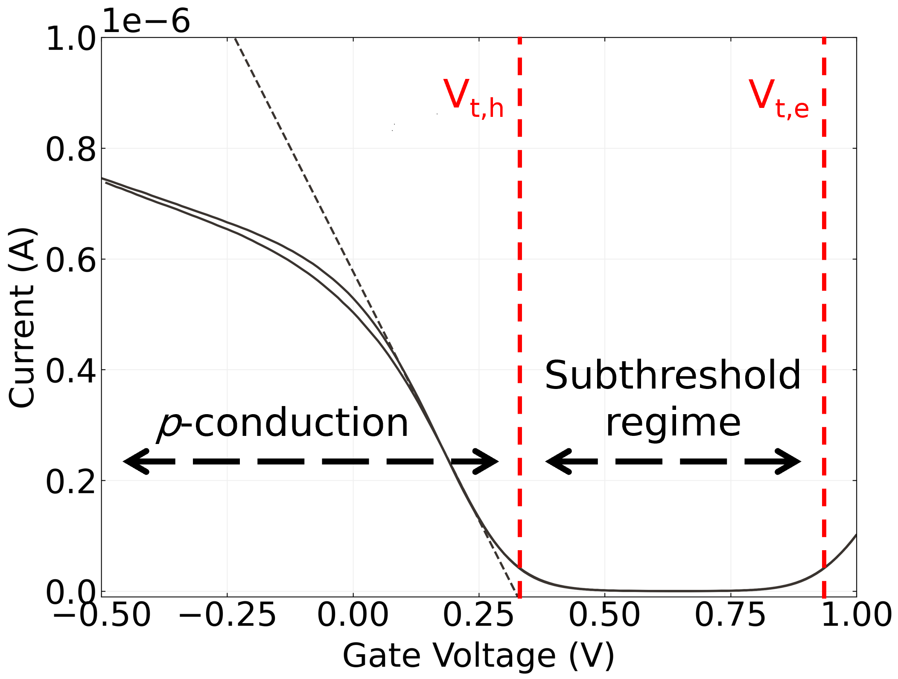
The threshold voltage \(V_t\) of a unipolar transistor is equal to the gate voltage required to prevent the flow of charge carriers across the channel, often referred to as turning the device off [@Petti2016; @Shkodra2021]. In ambipolar devices, two separate threshold voltages exist for each type of charge carrier, \(V_{t,h}\) and \(V_{t,e}\), which are shown in Figure 9 on both a linear (a) and logarithmic (b) scale. In the region between these gate voltages, known as the subthreshold regime, both holes and electrons flow through the channel [@Avouris2007; @Reiner-Rozman2015]. If percolating pathways consisting entirely of m-CNTs are present, \(I_{off}\) flows through these pathways, as conduction through metallic nanotubes is largely unaffected by changes in \(V_g\) [@Fuhrer2000; @Topinka2009]. If there are no unblocked m-CNT pathways, \(I_{off}\) is entirely due to Schottky barrier tunnelling [@Avouris2007]. \(V_t\) can be estimated by extrapolating the trendline of the linear region of the transfer characteristics to the \(V_g\) axis. The intercept is approximately equal to the threshold voltage when \(V_{ds}\) is close to zero, as shown in Figure 9 (b) [@Sze2006; @Petti2016; @Li2023]. This is only a rough estimate of the actual device \(V_t\), but is sufficient when comparing the gating behaviour of different devices [@Li2023].
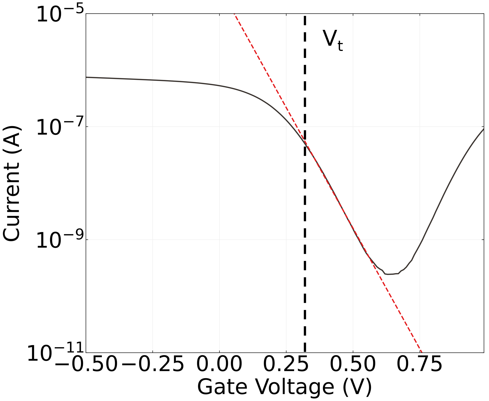
The subthreshold slope \(S = d\textrm{log}_{10}(I_{d})/dV_g|_{\textrm{max}}\) is a measure of how rapidly a transistor approaches the minimum current \(I_{off}\). The subthreshold slope is often referred to using its reciprocal value, the subthreshold swing, which is equivalent to the change in \(V_g\) required to change \(I_d\) by one order of magnitude. This figure of merit is strongly related to the gate capacitance of the device. As the slope exponentially approaches the off current in the subthreshold regime, it can be fitted with a linear trendline on a logarithimic scale. [@Sze2006; @Petti2016]. A linear trendline fitted to the logarithm of the subthreshold regime is shown in Figure 10, where the gradient corresponds to subthreshold slope. A high subthreshold slope exceeding than 10 decades/V is ideal for reduced power consumption of the working sensor device [@Petti2016]. The subthreshold slope of the transfer sweep in Figure 10 is 8 decades/V. Heller et al. and Gao et al. found that sensor devices showed better signal-to-noise ratio when gated in the subthreshold regime, as small voltage changes in response to analyte led to exponential current changes along the subthreshold slope [@Heller2009; @Gao2010].
Sensing
As all atoms are at the surface of the carbon nanotube structure, nanotubes are very sensitive to their surroundings and easily modified, making them useful in biosensor applications [@Cao2009; @Yao2021; @Shkodra2021]. The chirality and diameter of a carbon nanotube affects both its coupling with the gate and its surface chemistry, which determines the sensing mechanisms available to a single CNT. Only s-CNTs can be electrostatically gated; m-CNTs, bent nanotubes and larger diameter nanotubes are typically more reactive [@Cao2009; @Zhao2012; @Chhikara2013; @Li2023]; and the nanotube chirality (\(n,m\)) can determine the strength of binding to DNA in a base sequence-dependent manner [@Rouhi2011a]. Carbon nanotubes have been used for vapour-phase sensing since 2000, when Kong et al. found that the resistance over a single CNT channel was modified when exposed to gas molecules like NO\(_2\) and NH\(_3\) [@Kong2000]. Carbon nanotubes have been used to detect the presence of analyte down to the parts per billion level in a variety of gas sensor applications [@Chen2019; @Yao2021]. However, in general, the specificity of such a sensor is low, as nanotubes respond to many different analytes in a similar manner. To enhance specificity, surface functionalisation is often performed using either inorganic or biological materials, such as enzymes, antibodies, aptamers and proteins [@Cao2009; @Shkodra2021; @Yao2021].
For carbon nanotube network transistors, sensing mechanisms include electrostatic gating, charge transfer, Schottky barrier modulation, modulation of channel capacitance relative to the electrolyte and charge scattering. Response mechanisms may take place at the gate, the junctions between channel and contact, or at the semiconductor channel [@Heller2008; @Battie2011; @Boyd2014; @Tran2016; @Li2023]. Modification of the channel-metal Schottky barrier can dominate sensing activity, and this can complicate the identification of mechanisms underlying the sensing behaviour [@Cao2009; @Boyd2014; @Schroeder2019]. The encapsulation layer shown in Figure 1 is added to separate the electrodes from the channel-metal junction and prevent these responses [@Heller2008; @Shkodra2021]. In an encapsulated device, the predominant sensing mechanism is either charge transfer from the analyte to channel [@Allen2007; @Battie2011] or electrostatic gating [@Heller2008]. The charge transfer mechanism involves direct addition of charge carriers to the channel, while the gating mechanism results from a nearby charge inducing an opposite polarity charge in the channel. Both changes alter the relationship between \(V_g\) and \(I_d\) and shift the carrier threshold voltage(s) [@Tran2016; @Shkodra2021; @Li2023]. Modulation of Schottky and other potential barriers present in the network may also make a significant contribution to sensing responses, especially when a network is close to its percolation threshold [@Boyd2014; @Murugathas2019].
Summary
Graphene and carbon nanotube network field-effect transistors are both ideal as the transducer element in sensing applications due to their excellent electrical properties and high sensitivity. These thin-film FETs can be used as sensor platforms in either a back-gated or liquid-gated configuration, where the liquid-gated configuration is used in aqueous sensing applications. A key attribute of the liquid-gated configuration is Debye length, which must be optimised for maximum transistor sensitivity. Important device parameters of the graphene and carbon nanotube network FETs include transconductance, on-off ratio, gate leakage currents, current hysteresis, threshold voltage and sub-threshold slope. The voltage corresponding to the Dirac point (or points) of graphene is another important figure of merit for graphene field-effect transistors. Various attributes of the morphology of graphene and carbon nanotube networks contribute to the unique electrical and sensing properties exhibited by these transistors, including graphene folds and junctions between nanotubes of different chirality. The use of these transducers in past odorant receptor biosensor applications is discussed in ?@sec-iOR-sensors, while fabrication of the transducers used here is detailed in ?@sec-fabrication.